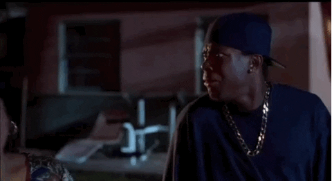

“Damn Chris” is so crazy
It's safe to say that Dirk is never volunteering for something like this ever again
About Us
Our entire BSC chain has worked hard for nearly ten years and tens of millions of people, just for this day!
Do you know the weight of this day? Because of this day, crypto researchers will divide the history of the entire cryptocurrency community into two sections!
Heartfelt call from traders who are passionate about MEME culture on the BSC chain
DamnChris-314,BSC OF MEME, was born!
In the DamnChris-314 community, everyone can become a project consultant and make suggestions to the team, so that everyone can experience the pleasure of project development.
